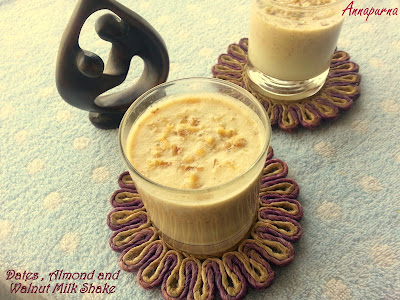

origin: Pakistan, India, Punjab province
taste: rich creamy, naturally sweet, caremal-like dates, grainy buttery
served with: chilled in glass, almonds, dry fruits, vanilla ice-cream, wipping cream
ocassions: Ramadan, Religious festivals, breakfast
To prepare the Khoya Khajoor Milkshake, place the deseeded and chopped dates into a blender with the initial half cup of milk and blend until a smooth, thick paste forms. Add the khoya and sugar or honey to the mixture, blending again to fully incorporate the rich milk solids. Pour in the remaining one and a half cups of milk along with the crushed ice, then blend on high speed until the shake is cold and frothy. Finally, pour the drink into glasses and top with the chopped dry fruits for a crunchy garnish.